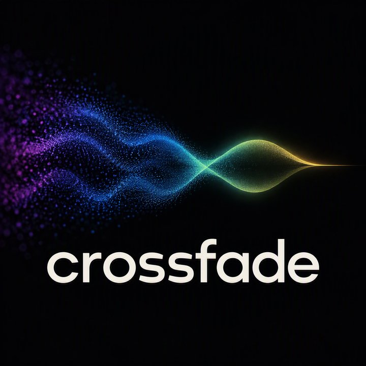

CROSSFADE
A streaming service for independent artists, indexed by where a track sits between genres. One business, carried through the course's three projects: designed, then built as an SQL database, then as a NoSQL database.
info579_group_1 · Herling, Nathan · Pabari, Nidhi Nilesh
INFO 579: SQL/NoSQL DatabasesProjects
PROJECT 1
Database Design
Requirements analysis, conceptual model, sample data and physical model.
PROJECT 2
SQL Database
The Project 1 design built and queried as a relational database.
PROJECT 3
NoSQL Database
The same business modelled in a NoSQL database.